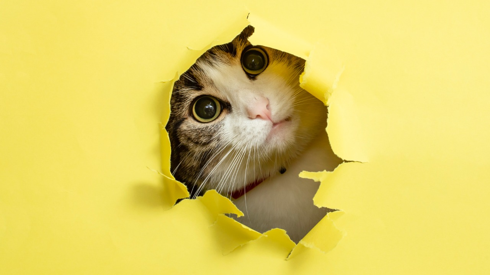

Curiosidades sobre Gatos
- O coração do gato bate quase duas vezes mais rápido que o coração humano: Chegando a cerca de 110 a 140 batidas por minuto.
- Gatos podem girar suas orelhas 180 graus: Isso lhes permite ouvir sons de todas as direções, ajudando na caça.
- Um gato quase nunca mia para outro: Eles costumam apenas ronronar, silvar (um som mais agudo e prolongado) e cuspir para outros gatos..
- Gatos passam cerca de 70% do seu tempo dormindo: Isso equivale a aproximadamente 16 horas por dia.
- Gatos têm um padrão de impressão digital único: As suas marcas nas almofadas das patas são exclusivas, assim como as impressões digitais dos humanos.
